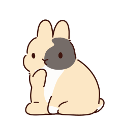
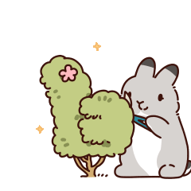
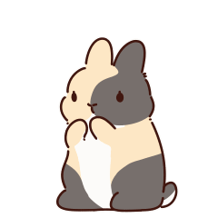

致禾呈
20岁生日快乐！时间是不是过得很快？有没有感觉自己好像一下子就长大了，变成了不敢想象的大人呢？会不会担心未来会发生什么？不知道未来的路会怎么走？虽然我目前为止还是19岁，不能猜到禾呈的想法，但是不管怎么样，我觉得禾呈都不用担心未来，因为你是我见到过的最坚强最勇敢的人。虽然遇到过很多很多不愉快的事情，但是你仍然保持着对朋友们的热情和对生活的热爱，你会想该怎么样给大家过生日，怎么样让大家开心，也会想什么时候跟朋友们出去玩，什么时候去吃一顿好吃的，是很会享受生活的一个人能够享受生活就已经战胜了99%的人哦，因为这是能让人继续走下去的秘诀，希望禾呈在变成社畜之后也还能够从生活中的小事中感受到幸福。
昨天是我们在一起的第600天，看到这个数字有没有觉得，诶？好大！原来我们已经不是刚在一起的时候了，这600天的时间，我们对彼此之间的了解已经达到了任何人都要多的地步。虽然有时候我们会因为一些小事吵架，但这确实是在所难免的事情。我在感情方面始终是一个比你迟钝的人，也不擅长表达自己的情感，很多时候我都不能意识到自己的行为会让你难过，也不知道该怎么能让你不难过。但是禾呈每次都包容我，教我应该怎么样做，我很感谢你，当然，我也越来越懂你，越来越能够真切的感受到你的喜怒哀乐，我觉得这是一件再好不过的事情。希望我们以后的矛盾可以变得越来越少，变成两个非常合拍的人
未来会变成什么样呢？未来要变成什么样的人呢？我迫切地想要找到这个答案，你说我变得成熟了，我只是想要找到一条出路，找到一个答案。不过就目前来看，我们最好的选择或许是按部就班的往前走，或许我真的不用努力地往前看，或许这些与你同行的日子，就是我期盼的未来。
我其实希望，我们可以一直这样手牵手走下去，走到我们长大成人，走到我们成家立业，走到我们两鬓花白，走到我们看不清彼此的脸庞，都能手牵着手，一直一直走下去。
 于是我又重新学了一遍网站的搭建之类的事情，好在曾经做过有点经验，不然一个月的时间都不够我准备了。如果禾呈看到这个礼物能感到惊喜，那我就很满足了。
于是我又重新学了一遍网站的搭建之类的事情，好在曾经做过有点经验，不然一个月的时间都不够我准备了。如果禾呈看到这个礼物能感到惊喜，那我就很满足了。